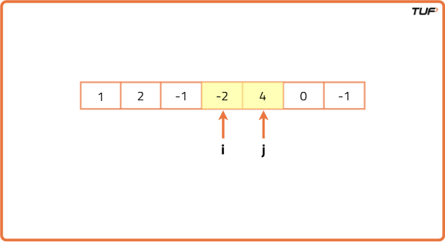
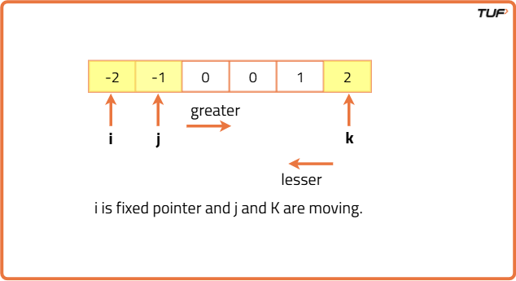

3 Sum : Find triplets that add up to a zero
Problem Statement: Given an array of N integers, your task is to find unique triplets that add up to give a sum of zero. In short, you need to return an array of all the unique triplets [arr[a], arr[b], arr[c]] such that i!=j, j!=k, k!=i, and their sum is equal to zero.
Pre-requisite: 2 Sum Problem
Examples
Example 1: Input: nums = [-1,0,1,2,-1,-4] Output: [[-1,-1,2],[-1,0,1]] Explanation: Out of all possible unique triplets possible, [-1,-1,2] and [-1,0,1] satisfy the condition of summing up to zero with i!=j!=k Example 2: Input: nums=[-1,0,1,0] Output: Output: [[-1,0,1],[-1,1,0]] Explanation: Out of all possible unique triplets possible, [-1,0,1] and [-1,1,0] satisfy the condition of summing up to zero with i!=j!=k
Disclaimer: Here is the practice link to help you assess your knowledge better. It's highly recommend trying to solve it before looking at the solution.
Brute Force Approach
Algorithm
Intuition:
This method is simple. We check every possible group of three numbers using three loops. If their sum equals the target (0), we keep them. Before storing, we sort the triplet so that we only keep unique ones.
Algorithm:
The steps are:
- Use a set because we need only unique triplets.
- Run the first loop from the start to the end of the array.
- Inside it, run the second loop from the next position to the end.
- Then run the third loop from the next position after the second loop to the end.
- For every three numbers, check if their sum equals 0. If yes, sort the triplet and add it to the set.
- At the end, return all triplets from the set.
Code
#include <bits/stdc++.h>
using namespace std;
// Class to solve 3-sum problem
class Solution {
public:
// Function to find triplets with sum zero
vector<vector<int>> threeSum(vector<int>& arr, int n) {
// Store unique triplets
set<vector<int>> st;
// First loop for first element
for (int i = 0; i < n; i++) {
// Second loop for second element
for (int j = i + 1; j < n; j++) {
// Third loop for third element
for (int k = j + 1; k < n; k++) {
// If triplet sum is zero
if (arr[i] + arr[j] + arr[k] == 0) {
// Store sorted triplet to avoid duplicates
vector<int> temp = {arr[i], arr[j], arr[k]};
sort(temp.begin(), temp.end());
st.insert(temp);
}
}
}
}
// Convert set to vector
vector<vector<int>> ans(st.begin(), st.end());
return ans;
}
};
// Driver code
int main() {
vector<int> arr = {-1, 0, 1, 2, -1, -4};
int n = arr.size();
Solution obj;
vector<vector<int>> res = obj.threeSum(arr, n);
for (auto &triplet : res) {
for (auto &num : triplet) cout << num << " ";
cout << endl;
}
return 0;
}
Complexity Analysis
Time Complexity: O(N3 * log(no. of unique triplets)), where N = size of the array.
Reason: Here, we are mainly using 3 nested loops. And inserting triplets into the set takes O(log(no. of unique triplets)) time complexity. But we are not considering the time complexity of sorting as we are just sorting 3 elements every time.
Space Complexity: O(2 * no. of the unique triplets) as we are using a set data structure and a list to store the triplets.
Better Approach
Algorithm
Intuition
Earlier, we used three loops to find triplets that sum to zero. But now, we aim to do the same using just two loops. To do this, we will calculate the third number needed to complete the triplet instead of looping to find it.
The idea is simple: if we already have two numbers, we can figure out what the third number should be to make the sum zero. Instead of checking all possible third numbers, we just check if this required number is already present using a set, which helps us search quickly.
But we have to be careful. We cannot put all numbers in the set from the beginning. If we do that, we might accidentally use the same number again from the same position, which is not allowed. That’s why we only put numbers into the set after using them in the second loop.
Approach
- Start by creating a set to store the final unique triplets.
- Use the first loop to go through each number one by one.
- Before starting the second loop, create another set to help find the third number.
- Now run the second loop, picking another number after the current one from the first loop.
- Check what number is needed to complete the triplet so that the total is zero.
- If this number is already present in the set, it means we found a valid triplet. Sort it and add it to the answer set.
- After checking, add the current number to the set so it can be used in future checks.
- Finally, after both loops finish, return all the triplets collected in the set.
Code
#include <bits/stdc++.h>
using namespace std;
// Class to solve 3-sum problem
class Solution {
public:
// Function to find triplets with sum zero
vector<vector<int>> threeSum(vector<int>& arr, int n) {
// Store unique triplets
set<vector<int>> ans;
// First loop for first element
for (int i = 0; i < n; i++) {
// Set to store elements seen in this iteration
set<int> hashset;
// Second loop for second element
for (int j = i + 1; j < n; j++) {
// Calculate third element needed
int third = -(arr[i] + arr[j]);
// If third already in set, we found a triplet
if (hashset.find(third) != hashset.end()) {
vector<int> temp = {arr[i], arr[j], third};
sort(temp.begin(), temp.end());
ans.insert(temp);
}
// Add current element to set
hashset.insert(arr[j]);
}
}
// Convert set to vector
return vector<vector<int>>(ans.begin(), ans.end());
}
};
// Driver code
int main() {
vector<int> arr = {-1, 0, 1, 2, -1, -4};
int n = arr.size();
Solution obj;
vector<vector<int>> res = obj.threeSum(arr, n);
for (auto &triplet : res) {
for (auto &num : triplet) cout << num << " ";
cout << endl;
}
return 0;
}
Complexity Analysis
Time Complexity: O(N2 * log(no. of unique triplets)),
as we are mainly using 3 nested loops. And inserting triplets into the set takes O(log(no. of unique triplets)) time complexity. But we are not considering the time complexity of sorting as we are just sorting 3 elements every time.
Space Complexity: O(2 * no. of the unique triplets) + O(N) as we are using a set data structure and a list to store the triplets and extra O(N) for storing the array elements in another set.
Optimal Approach
Algorithm
Intuition
This is an improved version of the previous solution. We remove the extra set (used for unique triplets) and HashSet (used for quick searching).
By sorting the array first, we can:
- Easily skip repeated numbers by checking if the current number is the same as the previous one.
- Ensure all triplets are unique without storing them in a set.
Instead of using a HashSet to find triplets, we use the two-pointer method:
- One pointer moves forward from the left, the other backward from the right.
- We adjust their positions depending on whether the total is greater than, less than, or equal to the target.
Approach
- Sort the array first.
- Fix the first number using a loop from the beginning to the end of the array.
- Skip the number if it is the same as the previous one (to avoid duplicates).
- Use two pointers:
- Left: starts right after the fixed number.
- Right: starts from the last element of the array.
- While the left pointer is before the right pointer:
- If the total is greater than 0 → move the right pointer one step left.
- If the total is less than 0 → move the left pointer one step right.
- If the total equals 0 → store the triplet, then move both pointers while skipping duplicates.


Code
#include <bits/stdc++.h>
using namespace std;
// Class to solve 3-sum problem
class Solution {
public:
// Function to find triplets with sum zero
vector<vector<int>> threeSum(vector<int>& arr, int n) {
// Sort the array
sort(arr.begin(), arr.end());
// Store final result
vector<vector<int>> ans;
// First loop for first element
for (int i = 0; i < n; i++) {
// Skip duplicates for first element
if (i > 0 && arr[i] == arr[i - 1]) continue;
// Two pointers
int left = i + 1, right = n - 1;
// Find pairs for current arr[i]
while (left < right) {
int sum = arr[i] + arr[left] + arr[right];
if (sum == 0) {
ans.push_back({arr[i], arr[left], arr[right]});
left++, right--;
// Skip duplicates for left
while (left < right && arr[left] == arr[left - 1]) left++;
// Skip duplicates for right
while (left < right && arr[right] == arr[right + 1]) right--;
}
else if (sum < 0) left++;
else right--;
}
}
return ans;
}
};
// Driver code
int main() {
vector<int> arr = {-1, 0, 1, 2, -1, -4};
int n = arr.size();
Solution obj;
vector<vector<int>> res = obj.threeSum(arr, n);
for (auto &triplet : res) {
for (auto &num : triplet) cout << num << " ";
cout << endl;
}
return 0;
}
Complexity Analysis
Time Complexity: O(NlogN)+O(N2), as The pointer i, is running for approximately N times. And both the pointers j and k combined can run for approximately N times including the operation of skipping duplicates. So the total time complexity will be O(N2).
Space Complexity: O(no. of quadruplets), This space is only used to store the answer. We are not using any extra space to solve this problem. So, from that perspective, space complexity can be written as O(1).